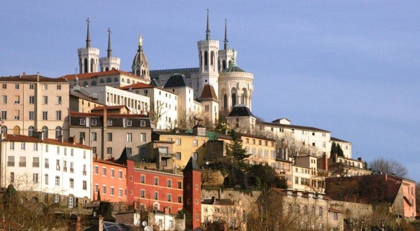

Lyon
Je voudrais vous présenter aujourd’hui une ville qui a deux mille ans d’histoire. Lyon est une ville unique en France. Son riche patrimoine montre les différentes époques et raconte l’histoire de la ville. Grâce à son patrimoine architectural très riche, Lyon a été inscrit au Patrimoine mondial de l’humanité.
La ville de Lyon est située dans la vallée du Rhône. Au nord, il y a le Beaujolais célèbre pour son vin rouge appelé Beaujolais Nouveau. A l’Ouest il y a les Monts du Lyonnais, et à l’Est et au Nord il y a la plaine de la Dombes, Dombes s’écrit DOMBES et l’Isère. Il est très facile d’aller à Lyon si on vient de Paris. Vous pouvez prendre le TGV, il faut deux heures. Vous pouvez aussi y aller en avion, cela prend une heure...
A Lyon, vous trouverez de nombreux musées : le musée gallo-romain de Fourvière par exemple est situé 17 rue Cléberg
(il est ouvert du mardi au dimanche de dix heures à dix-huit heures, l’entrée coûte six euros quand c’est plein tarif et quatre euros quand c’est tarif réduit, notez que le musée est gratuit le jeudi pour tout le monde) Vous pouvez joindre le musée au numéro suivant : 04 72 38 49 30 je répète 04 72 38 49 30. Les musées de Lyon proposent aussi des animations pour tout le monde : des visites à thèmes, des conférences, des contes, des ateliers. Et pour que tout le monde en profite, la plupart des grands musées lyonnais sont accessibles aux handicapés et le Musée des Beaux-arts propose des visites spéciales pour les gens qui ont des difficultés pour entendre ou pour voir.
Vous aimerez vous promener dans la ville où chaque quartier a gardé des petits coins de nature avec de nombreux parcs, des jardins, des places aux fontaines rafraîchissantes, des espaces verts et les quais du Rhône et de la Saône où il y a de nombreuses pistes cyclables où vous pourrez louer un « Velov » pour faire une petite promenade à vélo.
Pour le shopping tout est possible: le luxe bien sûr, Lyon est connu pour la qualité de sa soie. Le Carré d’Or par exemple , c’est le nom d’un quartier, le Carré d’Or propose plus de soixante-dix magasins de luxe, dans un quartier où il fait bon se promener à pied, entre Place Bellecour et les Cordeliers et les nombreuses brocantes, antiquaires et les marchés qui offrent aux amateurs de multiples occasions de chiner.
Les amateurs de football pourront voir des matchs magnifiques avec L’OL, OL signifie Olympique lyonnais, c’est le nom du club de football de Lyon. Et si vous n’aimez pas le foot, vous pourrez toujours goûter à la gastronomie locale qui est célèbre dans le monde entier.
Chaque année, Lyon accueille de nombreux touristes et étudiants étrangers. Si vous voulez apprendre le français à Lyon vous pouvez choisir d’étudier directement à l’université. Si vous préférez étudier en petit groupe, vous pouvez aussi apprendre le français dans une école de langue.

(Recuerda que las respuestas deben escribirse en francés)
Envoyer
Regtour